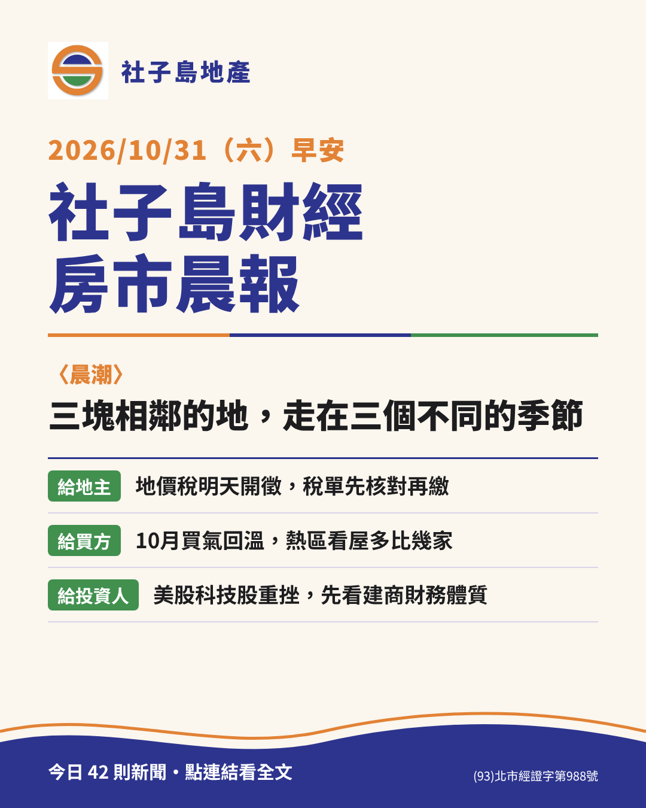

2026/10/31 (六) 早安
社子島財經房市晨報｜三塊相鄰的地，走在三個不同的季節
今日 42 則財經與房市新聞，依主題分成 10 類，社子島、主商圈與台北市的新聞排在最前面。點標題就能開啟原文。
〈潮汐表〉今天的三道潮水
- 給地主地價稅明天（11/1）開徵，11/30前要繳；多筆土地可能只寄一張，9月才賣掉的地也要繳全年，收到先核對。
- 給買方10月房仲買氣回溫，但各家數字不一；北投預售量居北市第一，熱區看屋更要多比幾家。
- 給投資人美股週五科技股重挫、費半跌逾7%；建築融資逾放比上升，選建案先看建商的財務體質。
〈晨潮〉
三塊相鄰的地，走在三個不同的季節
昨天我們在堤外留了一個問題，今天週六，寫給正在找地的朋友：社子島、關渡平原、北士科，這三塊相鄰的土地，各自走到了哪一步？適合什麼樣的人？
先說社子島。開發的細部計畫已經通過，現在走到區段徵收的審議階段，報導估計最快2027年才啟動拆遷。所以今天在社子島買地，買的其實不是眼前這塊地，而是將來分配土地的權利，加上一段等待的時間。適合什麼樣的人？我們覺得是有耐心、等得起，也願意先把產權、持分、抵價地規則弄懂的人。
再看北士科。這裡已經是一座在建設中的科技園區，輝達總部確定進駐後，北投區的預售屋交易量，今年前八個月是北市第一。熱度已經寫在價格裡，適合想就近工作、自住，或打算長期持有的人；想短進短出的，要更冷靜。
最後是關渡平原。國土功能分區已把關渡、洲美劃入「城鄉一」，代表將來有機會依都市計畫轉為可開發的土地，但都市計畫還沒擬定，時程也還說不準。這裡適合看得最遠的人：能接受不確定，願意陪一塊地慢慢長大。三塊地的進度，我們整理在下面的小框裡。
主商圈三塊地，各走到哪一步
- 社子島：細部計畫已通過，區段徵收計畫審議中；買的是將來的配地權利與時間。
- 北士科：科技園區建設中，輝達總部確定進駐；熱度已反映在周邊房價。
- 關渡平原：國土計畫劃入「城鄉一」，後續都市計畫尚待擬定。以上時程與規定，皆以政府公告為準；本文不構成投資建議。
市場這頭，10月的房仲成績單出爐，各家都說買氣回溫，但數字不一；美股週五科技股重挫，週一台股開盤前，再看一眼就好。今天的新聞已經分好類，往下滑就能看到。
——社子島地產團隊
主商圈：社子島・北士科・關渡洲美平原7 則
社子島排最前面；今天社子島沒有新進度，放三則開發進度背景報導，再接北士科與關渡洲美平原
台北市2 則
與社子島同在台北市，政策與行情最有參考性
市地重劃・區段徵收4 則
全台各地的重劃與區段徵收進度
利率・房貸・資金3 則
銀行風險與建商財務，買方與投資人都該看
房市走向6 則
10月成績單出爐，各家房仲說法不一
土地・產業用地5 則
企業與建商的買地動向
都更・老屋4 則
老屋多、整合難，重建的機會與阻礙
稅務與法律實務5 則
地價稅明天開徵，地主與房東的提醒
高齡與人口2 則
長輩的居住與陪伴
今日財經大事4 則
週末不開盤，先看美股與下週的功課
〈堤外的話〉
今天的晨潮，陪您走了一趟三塊地。
站在延平北路九段的堤防上，隔著基隆河，一邊是關渡平原還在冒芽的田，一邊是北士科慢慢升起的吊車；腳下的社子島，還是那幾條熟悉的小路。三個季節，就在同一眼裡。
地價稅明天開徵，週日我們來談一個每家都會遇到的問題：稅單上的數字是怎麼算出來的？自用住宅的優惠稅率，地主可以怎麼檢查、怎麼申請？
您現在站在哪一塊地上？歡迎回覆，和我們說說您看見的風景。
〈渡口〉
堤外的話說到三塊地，若您也正在找一塊值得耕耘的地，還不確定該從哪一塊看起，歡迎來渡口坐坐。
若您正在找一塊值得耕耘的地，告訴我們您想做什麼，我們幫您先篩過一輪。
不急著成交。我們是守在堤邊的人，守著每一塊土地的權益，直到把它交到願意耕耘它的人手上。
📞 歡迎先來電 0922-252-969先通個電話聊聊，再約時間見面喝茶。
 掃描 QR code，加 LINE 好友LINE ID：@shezidao💬 加 LINE
掃描 QR code，加 LINE 好友LINE ID：@shezidao💬 加 LINE
社子島地產團隊｜service@shezidao.com.tw
台北市士林區延平北路九段288號
週一至週六 9:30–18:00（週四 9:30–13:30），週日公休📞 來電 0922-252-969
本站由社子島地產開發有限公司經營，為民間不動產資訊網站，非臺北市政府官方網站；政府公告請以臺北市政府與地政局網站為準。
本期新聞由社子島地產團隊自經濟日報、聯合新聞網、自由時報、中時新聞網、工商時報、中央社、ETtoday、好房網、今周刊 等媒體收集，標題照原文，點擊即可開啟原始報導；法規說明僅供參考，實際權利義務以主管機關公告為準。〈晨潮〉〈堤外的話〉為本團隊之參考意見，不構成投資建議，亦不代表支持任何候選人。